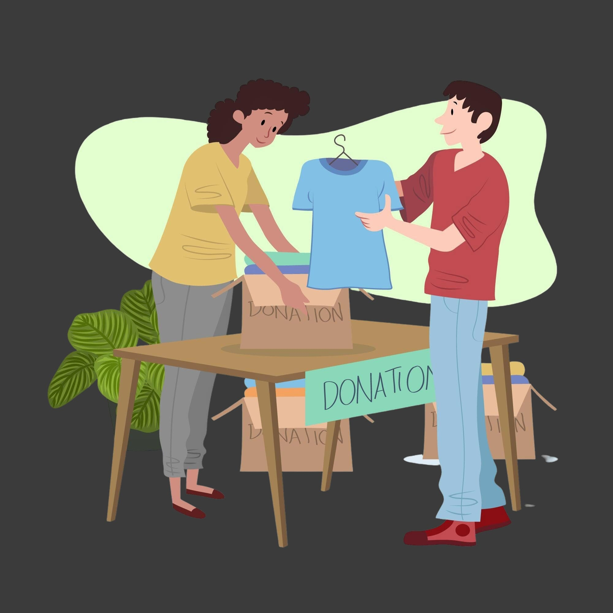

INTERCAMBIO DE ROPA Y OBJETOS USADOS

¿Tienes articulos buen estado que ya no usas? ¡No los dejes olvidados en un rincón!
Tráelos a nuestro intercambio de ropa y objetos usados y llévate algo sin gastar un solo euro.
📅 Cuándo: 15/03/2020
📍 Dónde: Auditorio Puertollano
⏰ Hora: 12:00 a 22:00
CONCURSO DE INNOVACION SOSTENIBLE

Si tienes una idea que puede hacer del mundo un lugar más sostenible, este es tu momento.
Únete a nuestro concurso y presenta tu proyecto para ayudar al planeta.
📅 Fecha: 08/03/2025
📍 Lugar: La concha de Puertollano
⏰ Hora: 12:00 a 19:00